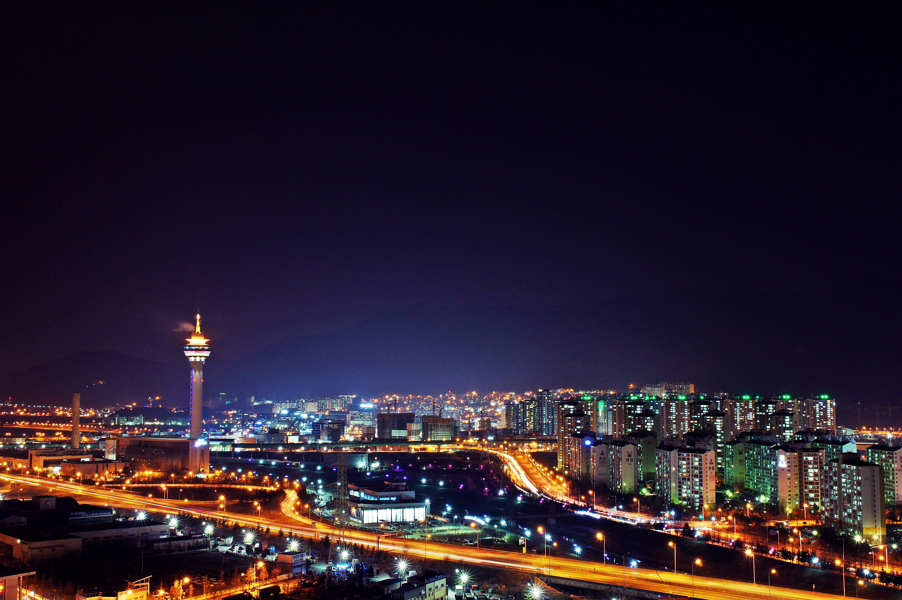

Go the the home!
Travel the Yangsan!
Introduce the Yangsan Tower

The Yangsan Tower is a building that installed an observatory and a restaurant using a chimney of a resources recovery facility, which was built at a cost of 62 billion won on 53,904 square meters of land in the new town of Seoksan-ri, Dong-myeon, Yangsan, South Gyeongsang Province.
The Yangsan Tower, which is 135 meters tall and 25 meters high, is 160 meters tall, after Namsan Tower (236.7 meters) in Seoul and Woobang Tower (202 meters), currently the third tallest tower. It is 40 meters higher than Busan Tower (120 meters).
Yangsan Resource Recovery Facility, where the Yangsan Tower is located, is the first incineration facility in Korea where a heat-dissuance ceremony was introduced to melt and dispose of household waste with high temperature of 1700°C.
Select the place where you want to see in Yangsan
- Yangsan Tower
- Tongdosa Temple